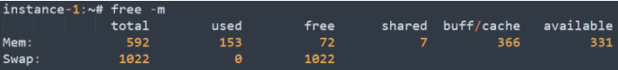
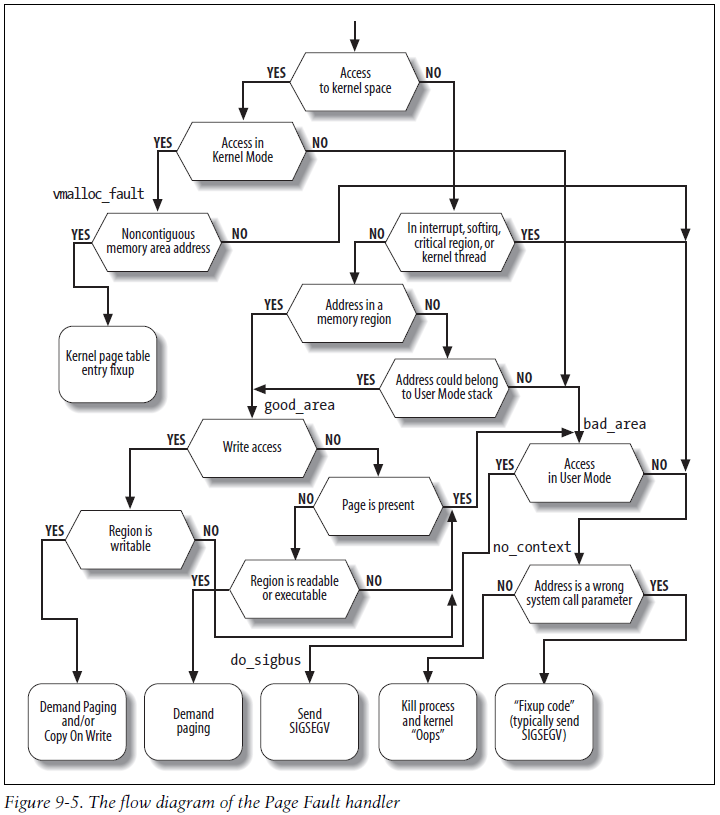

This memory is called the process address space, which is the representation of memory given to each user-space process on the system.
Memory descriptor mm_struct representation
Each Unix process owns a specific memory region called heap , which is used to satisfy the process’s dynamic memory requests. The start_brk and brk fields of the memory descriptor delimit the starting and ending addresses, respectively, of that region.
The following C library functions can be used by the process to request and release dynamic memory:
malloc(size): Requests size bytes of dynamic memory; if the allocation succeeds, it returns the linear address of the first memory location.calloc(n,size): Requests an array consisting of n elements of size size; if the allocation succeeds, it initializes the array components to 0 and returns the linear address of the first element.free(addr): Releases the memory region allocated by malloc( ) or calloc( ) that has an initial address of addr.brk(addr): Modifies the size of the heap directly; the addr parameter specifies the new value of current->mm->brk, and the return value is the new ending address of the memory region (the process must check whether it coincides with the requested addr value).sbrk(incr): Is similar to brk(), except that the incr parameter specifies the increment or decrement of the heap size in bytes.The brk() function differs from the other functions listed because it is the only one implemented as a system call. All the other functions are implemented in the C library by using brk() and mmap().
brk() system call, the kernel executes the sys_brk(addr)#include<stdio.h>
void fun(int *main_local_addr){
int fun_local;
if (main_local_addr < &fun_local)
printf("Stack grows upward\n");
else
printf("Stack grows downward\n");
}
int main(){
int main_local;
fun(&main_local);
return 0;
}

第一行"Mem"中，"total"是总的物理内存，"free"是空闲内存，"shared"是基于tmpfs的共享内存，"buff/cache"主要就是page cache。而"used"是根据空闲内存和page cache计算出来的结果：
used = total - free - buf/cache
"available"是内核3.14版本加入的，包括空闲内存和可回收的内存，但"available"的值实际是小于"free+buffer/cache"的, it is an estimate of the amount of memory that is available for starting new applications, without swapping.
第二行"Swap"中，"total"是磁盘中划定的swap space大小。
/proc/meminfo是了解Linux系统内存使用状况的主要接口。我们常用的”free”、”vmstat”等命令就是通过它获取数据后进一步加工的。
"meminfo"中数据的计算方法，则是在"/fs/proc/meminfo.c"文件中。
Cached and Buffered
当通过ext3/ext4等文件系统去访问file时，产生的page cache就是"Cached"，而直接访问"/dev/sda1"这种基于裸分区的file时，产生的缓存就是"Buffers"
LRU and shared mem
"meminfo"中记录了对用于内存回收的LRU链表的统计信息
但是好像"AnonPages"并不等于"Active(anon)"+"Inactive(anon)"，"Buffers"+"Cached"也并不等于"Active(file)"+"Inactive(file)"？差值就在Shmem里.
此处所讲的shared memory又包括一下几种, 在内核中都是基于tmpfs实现的
既然基于tmpfs文件系统，就不算匿名页，所以不被计入/proc/meminfo中的AnonPages，而是被统计进了：
AnonPages
Cached and mapped
Page Cache里包括所有file-backed pages，统计在/proc/meminfo的”Cached”中。
因为page cache中的页面即便已经不再被任一进程使用，但考虑到以后的某个时刻可能还会用到，在内存相对充足的情况下，这些页面将继续驻留在内存而不会被释放，但此时它们属于没有进程映射的状态。
为了统计Page Cache中被进程正在使用的内存，增加了一个"Mapped"信息，它属于page cache的一部分（可视作“子集”）
SwapCached
需要用到交换区的内存包括：”AnonPages”和”Shmem”。每一个交换区设备都对应自己的swap cache，可以把swap cache理解为交换区设备的”page cache”。
/proc/meminfo中的SwapCached背后的含义是：系统中有多少匿名页曾经被swap-out、现在又被swap-in并且swap-in之后页面中的内容一直没发生变化。也就是说，如果这些匿名页需要被swap-out的话，是无需进行I/O write操作的。
“SwapCached”不属于”Cached”，两者没有交叉
“SwapCached”内存同时也在LRU中，还在”AnonPages”或”Shmem”中，它本身并不占用额外的内存。仅用来统计用。
mlocked “mlocked”统计的是被mlock()系统调用锁定的内存大小。被锁定的内存因为不能pageout/swapout，会从Active/Inactive LRU list移到Unevictable LRU list上。
“mlocked”并不是独立的内存空间，它与以下统计项重叠：LRU Unevictable，AnonPages，Shmem，Mapped等。
slab
关于slab cache的统计信息
free命令输出中的"buff/cache"通常包含"Slab"，但"meminfo"中的"Cached"并不包含它：
vmalloc
通过vmalloc分配的内存都统计在/proc/meminfo的 VmallocUsed 值中，但是要注意这个值不止包括了分配的物理内存，还统计了VM_IOREMAP、VM_MAP等操作的值，譬如VM_IOREMAP是把IO地址映射到内核空间、并未消耗物理内存。从物理内存分配的角度，我们只关心VM_ALLOC操作，这可以从/proc/vmallocinfo中的vmalloc记录看到：
$ grep vmalloc /proc/vmallocinfo | awk '{total+=$2}; END {print total}'
23375872
Page Table
Page Table用于将内存的虚拟地址翻译成物理地址，随着内存地址分配得越来越多，Page Table会增大，/proc/meminfo中的PageTables统计了Page Table所占用的内存大小。
要把Page Table与Page Frame区分开，每个物理Page Frame对应一个描述符(·)，在内核的引导阶段就会分配好、保存在mem_map[]数组中（在NUMA系统上可能会有多个mem_map数组，在node_data中或mem_section中），mem_map[]所占用的内存被统计在dmesg显示的reserved中，/proc/meminfo的MemTotal是不包含它们的。
而Page Table的用途是翻译虚拟地址和物理地址，它是会动态变化的，要从MemTotal中消耗内存。
Kernel Stack
每一个用户线程都会分配一个kernel stack（内核栈）。在x86系统上Linux的内核栈大小是固定的8K或16K
Kernel stack（内核栈）是常驻内存的，既不包括在LRU lists里，也不包括在进程的RSS/PSS内存里，所以我们认为它是kernel消耗的内存。统计值是/proc/meminfo的KernelStack。
Kernel Stats
Slab+ VmallocUsed + PageTables + KernelStack + HardwareCorrupted + Bounce + X
User Stats
围绕LRU进行统计: (Active + Inactive + Unevictable) + (HugePages_Total * Hugepagesize)
围绕Page Cache进行统计:
当SwapCached为0的时候，用户进程的内存总计如下：(Cached + AnonPages + Buffers) + (HugePages_Total * Hugepagesize)
当SwapCached不为0的时候，以上公式不成立，因为SwapCached可能会含有Shmem，而Shmem本来被含在Cached中，一旦swap-out就从Cached转移到了SwapCached，可是我们又不能把SwapCached加进上述公式中，因为SwapCached虽然不与Cached重叠却与AnonPages有重叠，它既可能含有Shared memory又可能含有Anonymous Pages。
围绕RSS/PSS进行统计:
把/proc/[1-9]*/smaps 中的 Pss 累加起来就是所有用户进程占用的内存，但是还没有包括Page Cache中unmapped部分、以及HugePages，所以公式如下：ΣPss + (Cached – mapped) + Buffers + (HugePages_Total * Hugepagesize)
VSS (Virtual Set Size) - 因为Linux中的进程是使用虚拟地址的，这些进程通过malloc()或者mmap()向内存申请内存之后，这部分内存大小称为VSS，内核并不会立刻为其分配实际的物理内存。等到进程真正使用到内存时(比如调用了memset()函数)，内核才会为这个进程分配物理内存，并建立虚拟地址和物理地址之间的映射。VIRT represents how much memory the program is able to access at the present moment. VIRT includes anything inside task's address space, no matter it is in RAM, swapped out or still not loaded from disk.
VSZ in ps; VIRT in topUSS (Unique Set Size) - 只计算进程自身占用的物理内存，完全不包含共享库所占用内存的USS
RSS (Resident Set Size) - 把共享库占用的内存直接加到每个进程头上
PSS in ps; RES in topPSS(Proportional Set Size) - 把一个共享库占用的内存，分摊到使用了这个共享库的各个进程头上，称为PSS(Proportional Set Size)，类似于小区里面的“公摊面积”。比如一个共享库占用了3MiB的物理内存，有3个进程使用了这个库，那么摊派到每个进程头上的都是1MiB。
SHR indicates how much of the VIRT size is actually sharable memory or libraries. In the case of libraries, it does not necessarily mean that the entire library is resident. For example, if a program only uses a few functions in a library, the whole library is mapped and will be counted in VIRT and SHR, but only the parts of the library file containing the functions being used will actually be loaded in and be counted under RES.
(Linux programming interface chatper 49)
mmap() FOUR usage
The contents of the mapping are initialized from a file region. Multiple processes mapping the same file initially share the same physical pages of memory, but the copy-on-write technique is employed, so that changes to the mapping by one process are invisible to other processes.
The main use of this type of mapping is to initialize a region of memory from the contents of a file. Some common examples are initializing a process’s text and initialized data segments from the corresponding parts of a binary executable file or a shared library file.
Text segment:
To allow multiple processes executing the same program or using the same shared library to share the same (read-only) text segment.
Initialized data segment:
To map the initialized data segment of an executable or shared library. Such mappings are made private so that modifications to the contents of the mapped data segment are not carried through to the underlying file.
Each call to mmap() to create a private anonymous mapping yields a new mapping that is distinct from (i.e., does not share physical pages with) other anonymous mappings created by the same (or a different) process. Although a child process inherits its parent’s mappings, copy-on-write semantics ensure that, after the fork(), the parent and child don’t see changes made to the mapping by the other process.
The primary purpose of private anonymous mappings is to allocate new (zero-filled) memory for a process
malloc() employs mmap() for this purpose when allocating large blocks of memory.All processes mapping the same region of a file share the same physical pages of memory, which are initialized from a file region. Modifications to the contents of the mapping are carried through to the file.
This type of mapping serves two purposes.
As with a private anonymous mapping, each call to mmap() to create a shared anonymous mapping creates a new, distinct mapping that doesn’t share pages with any other mapping. The difference is that the pages of the mapping are not copied-on-write. This means that when a child inherits the mapping after a fork(), the parent and child share the same pages of RAM, and changes made to the contents of the mapping by one process are visible to the other process.
Mappings are lost when a process performs an exec(), but are inherited by the child of a fork(). The mapping type (MAP_PRIVATE or MAP_SHARED) is also inherited.
Information about all of a process’s mappings is visible in the Linux-specific /proc/PID/maps file.
void *mmap(void *addr, size_t length, int prot, int flags, int fd, off_t offset);
The addr argument indicates the virtual address at which the mapping is to be located.
The length argument will be rounded up to the next multiple of the page size.
The prot argument is a bit mask specifying the protection to be placed on the mapping.
| Value | Description |
|---|---|
| PROT_NONE | The region may not be accessed |
| PROT_READ | The contents of the region can be read |
| PROT_WRITE | The contents of the region can be modified |
| PROT_EXEC | The contents of the region can be executed |
The flags argument is a bit mask of options controlling various aspects of the mapping operation.
At least one of MAP_PRIVATE or MAP_SHARED needed to be included.
MAP_PRIVATE:
The arguments, fd and offset, are used with file mappings (they are ignored for anonymous mappings).
fd argument is a file descriptor identifying the file to be mapped.offset argument specifies the starting point of the mapping in the file, and must be a multiple of the system page size.return value
If a process attempts to access a memory region in a way that violates the protection on the region, then the kernel delivers the SIGSEGV signal to a process
PROT_NONE can be used as guard pages at the start or end of a region of memory that a process has allocated. If the process accidentally steps into it, the kernel generates SIGSEGV
Memory protections reside in process-private virtual memory tables.
To create a file mapping, we perform the following steps:
Once mmap() has been called, we can close the file descriptor without affecting the mapping.
On Linux, the pages of a file mapping are mapped in on the first access (not on mmap() call). This means that if changes are made to a file region after the mmap() call, but before the corresponding part (i.e., page) of the mapping is accessed, then the changes may be visible to the process. This behavior is implementation-dependent.
read()/write() involves two transfers:
Using mmap() eliminates the second transfer.
Using mmap() also lowers memory requirements by sharing a single buffer between the kernel space and user space. If multiple processes perform on the same file, they can all share the same kernel buffer.
If the size of the mapping is not a multiple of the system page size, it is rounded up. While the bytes in the rounded-up region (i.e., bytes 2200 to 4095 in the diagram) are accessible, they are not mapped to the underlying file (since no corresponding bytes exist in the file). Instead, they are initialized to 0. Changes to these bytes are not written to the file.
The kernel automatically carries modifications of the contents of a MAP_SHARED mapping through to the underlying file, but provides no guarantees about when such synchronization will occur.
The msync() system call gives an application explicit control over when a shared mapping is synchronized with the mapped file.
msync() with a call to fsync() (or fdatasync()) on the file descriptor corresponding to the mapping. This call will block until the buffer cache is synchronized with the disk. Alternatively, we can initiate asynchronous write out of the pages using the posix_fadvise() with POSIX_FADV_DONTNEED operation.On Linux, there are two different, equivalent methods of creating an anonymous mapping with mmap():
With both the MAP_ANONYMOUS and the /dev/zero techniques, the bytes of the resulting mapping are initialized to 0.
/dev/zero is a virtual device that always returns zeros when we read from it. Writes to this device are always discarded. A common use of /dev/zero is to populate a file with zeros (e.g., using the dd(1) command).
https://cloud.tencent.com/developer/article/1805655
malloc函数的实现会根据分配内存的size来决定使用哪个分配函数，size可由M_MMAP_THRESHOLD选项调节
Use of mmap()
The glibc implementation of malloc() uses MAP_PRIVATE anonymous mappings to allocate blocks of memory larger than MMAP_THRESHOLD bytes.
MMAP_THRESHOLD is 128 kB by default, It is adjustable via the mallopt() library function.munmap()) if they are later given to free().mmap kernel implementation refer to below section
Use of brk()
brk moves top of heap, the addr parameter specifies the new value of current->mm->brk, and the return value is the new ending address of the memory region
堆内存是由低地址向高地址方向增长。分配内存时，将heap段的最高地址指针mm->brk往高地址扩展。释放内存时，把mm->brk向低地址收缩。
完成这段申请后，只是开辟了一段区域，通常还不会立马分配物理内存，物理内存的分配会发生在访问时出现缺页异常后再处理 大概流程整理如下：
An exmaple of using brk() directly
#define _GNU_SOURCE
#include <assert.h>
#include <unistd.h>
int main(void) {
void *b = sbrk(0);
int *p = (int *)b;
/* Move it 2 ints forward */
brk(p + 2);
/* Use the ints. */
*p = 1;
*(p + 1) = 2;
assert(*p == 1);
assert(*(p + 1) == 2);
/* Deallocate back. */
brk(b);
return 0;
}
(Linux programming interface chatper 50)
The mprotect() system call changes the protection on the virtual memory pages in the range starting at addr and continuing for length bytes.
mprotect() is to change the protection of a region of mapped memory originally set in a call to mmap().int mlock(void *addr, size_t length);
The mlock() system call locks all of the pages of the calling process’s virtual address range starting at addr and continuing for length bytes.
The mlock() system call fails if there is insufficient physical memory or if the request violates the RLIMIT_MEMLOCK soft resource limit.
mlock(), mlockall(), and the mmap() MAP_LOCKED operation, RLIMIT_MEMLOCK defines a per-process limit on the number of bytes of its virtual address space that a process may lock.shmctl() SHM_LOCK operation, RLIMIT_MEMLOCK defines a per-user limit on the number of bytes in shared memory segments that may be locked by the real user ID of this process.Aside from the explicit use of munlock(), memory locks are automatically removed in the following circumstances:
munmap(); ormmap() MAP_FIXED flag.Where multiple processes share a set of pages (e.g., a MAP_SHARED mapping), these pages remain locked in memory as long as at least one of the processes holds a memory lock on the pages.
int mlockall(int flags);
The mlockall() system call locks all of the currently mapped pages in a process’s virtual address space, all of the pages mapped in the future, or both, according to the flags bit mask,
MCL_CURRENT
Lock all pages that are currently mapped into the calling process’s virtual address space. This includes all pages currently allocated for the program text, data segments, memory mappings, and the stack.
After a successful call specifying the MCL_CURRENT flag, all of the pages of the calling process are guaranteed to be memory-resident. This flag doesn’t affect pages that are
subsequently allocated in the process’s virtual address space;
MCL_FUTURE
Lock all pages subsequently mapped into the calling process’s virtual address space. Such pages may, for example, be part of a shared memory region mapped via mmap() or shmat(), or part of the upwardly growing heap or downwardly growing stack.
As a consequence of specifying the MCL_FUTURE flag, if the system runs out of RAM to allocate to the process or the RLIMIT_MEMLOCK soft resource limit is encountered:
mmap(), sbrk(), or malloc()) may failThe mincore() system call reports which pages in a virtual memory region are currently resident in physical memory.
It allows a process to advise the kernel about the process’s expected patterns of memory use.
MADV_NORMAL
This is the default behavior. Pages are transferred in clusters (a small multiple of the system page size). This results in some read-ahead and read-behind.
MADV_RANDOM
Pages in this region will be accessed randomly, so read-ahead will yield no benefit. Thus, the kernel should fetch the minimum amount of data on each read.
MADV_SEQUENTIAL
Pages in this range will be accessed once, sequentially. Thus, the kernel can aggressively read ahead, and pages can be quickly freed after they have been accessed.
MADV_WILLNEED
Read pages in this region ahead, in preparation for future access. The MADV_WILLNEED operation has an effect similar to the Linux-specific readahead() system call and the posix_fadvise() POSIX_FADV_WILLNEED operation.
MADV_DONTNEED
The calling process no longer requires the pages in this region to be memory resident. In Linux,
A page fault is an exception that the memory management unit (MMU) raises when a process accesses a memory page without proper preparations.
Minor page fault: If the page is loaded in memory at the time the fault is generated, but is not marked in the memory management unit as being loaded in memory, then it is called a minor or soft page fault.
Major page fault: a Page Fault that blocks the current process is called a major fault. Major fault forced the current process to sleep (most likely because time was spent while filling the page frame assigned to the process with data read from disk, or load the data for a page that was previously swapped out or to read data from an mmap()'d file)
mlock() system call or the MAP_LOCKED and MAP_POPULATE flags to mmap().The MMU detects the page fault, processor issues the page fault exception (exception number 14), the kernel handles the exception by page fault handler, it in turn makes the required page accessible in the physical memory or denys an illegal memory access.
Refer to Page Fault Kernel Internal
A segmentation fault is when your program attempts to access memory outside of the program's address space, or writing to a read-only segment of the address space, hence the name.
only the stack and the read/write portion of the data segment of a program are writable, while read-only data and the code segment are not writable.
Some examples:
At the hardware level, the fault is initially raised by the memory management unit (MMU) on illegal access (if the referenced memory exists), as part of its memory protection feature, or an invalid page fault (if the referenced memory does not exist)
At the operating system level, this fault is caught and a signal is passed on to the offending process, activating the process's handler for that signal. On Unix-like operating systems, a signal called SIGSEGV (abbreviated from segmentation violation). Default signal handler for SIGSEGV is CORE (terminate the process and core dump)
From Kernel's view, a process's address space is very different. The address space is split into two parts, the userspace part which potentially changes with each full context switch and the kernel address space which remains constant. The location of the split is determined by the value of PAGE_OFFSET which is at 0xC0000000 on the x86. This means that 3GiB is available for the process to use while the remaining 1GiB (3~4GB) is always mapped by the kernel.
kmalloc(), which returns virtual address, but guarantees the contiguous physical memory because of the direct mapping in this area.vmalloc area representing non-contiguous memory allocations in a contiguous virtual address space. The memory allocation in this area is done with vmalloc().kmap() or alloc_page(_GFP_HIGHMEM).Memory is arranged into nodes (eg, a bank of memory assigned to each CPU) that incur a different cost to access depending on the “distance” from the processor. This is concept of Non-Uniform Memory Access (NUMA).
struct pglist_data, typedef'ed as pg_data_t, declared in <linux/mmzone.h>.pgdat_list.typedef struct pglist_data {
int nr_zones;
struct zone node_zones[MAX_NR_ZONES];
unsigned long node_size;
struct page *node_mem_map;
int node_id;
unsigned long node_start_paddr; // change to node_start_pfn in kernel v2.6
struct pglist_data *node_next;
spinlock_t lru_lock;
...
} pg_data_t;
nr_zones is number of zones in this node，node_zones[] array pointing to the zone data structures。node_size is the number of page frames in this node.node_mem_map points to struct page* array. This is ifdef'ed out when it is SPARSEMEM model.node_id is node's logical id. It is the id of numa system.node_start_paddr is node's physical starting address.Each node is divided up into a number of blocks called zones. The kernel uses the zones to group pages of similar properties.
struct zone_struct, typedef'ed to zone_t, declared in <linux/mmzone.h>.typedef struct zone {
spinlock_t lock;
unsigned long spanned_pages;
unsigned long present_pages;
unsigned long nr_reserved_highatomic;
atomic_long_t managed_pages;
struct free_area free_area[MAX_ORDER];
unsigned long _watermark[NR_WMARK];
long lowmem_reserve[MAX_NR_ZONES];
atomic_long_t vm_stat[NR_VM_ZONE_STAT_ITEMS];
unsigned long zone_start_pfn;
struct pglist_data *zone_pgdat;
struct page *zone_mem_map;
...
} zone_t
spanned_pages is the total page frameszone_start_pfn is the physical address of starting page framemanaged_pages is the numebr of page frame allocated by buddy system.free_area is the free list, it contains the free page frames for allocation.zone_pgdat is the back pointer to the belonging node.zone_mem_map points to the mem_map array of "struct page"。Each physical page frame is represented by a struct page and all the structs are kept in a global mem_map array which is usually stored at the beginning of ZONE_NORMAL
The kernel and MMU (the hardware that manages memory and performs virtual to physical address translations) treats physical pages (also called page frame) as the basic unit of memory management.
The kernel represents every physical page (not virtual pages) on the system with a struct page structure. This structure is defined in <linux/mm_types.h>. An instance of this structure is allocated for each physical page in the system.
struct page {
unsigned long flags;
atomic_t _count;
atomic_t _mapcount; // Number of Page Table entries that refer to the page frame (-1 if none).
unsigned long private;
struct address_space *mapping;
pgoff_t index;
struct list_head lru; // Contains pointers to the least recently used doubly linked list of pages.
void *virtual;
};
<linux/page-flags.h>.
higher 8 bits of flag stores its zone and node, so that we can find page zone and node via page flag. In SPARSEMEM model, it also includes section bits.
page_count() to check count field. It returns 0 to indicate avaiable for use in a new allocation.address_space. This field will point to this address_space if the page belongs to the file. And index is the offset (in terms of page size) of the page in the file. Details refer to here
address_space is swapper_space which manages the swap address space.page_alloc.c. This is the list head for these LRU lists.There are three models supported in the kernel to manage physical memory layout: flat memory model (flatmem)，Discontiguous memory model (Discontigmem), sparse memory model (sparsemem).
The memory model deals with the conversion between between a physical page-frame number (PFN) and its corresponding struct page.
In 2008, SPARSEMEM_VMEMMAP became the only supported memory model for x86-64, as it was only slightly more expensive than FLATMEM but more efficient than DISCONTIGMEM.
| Architecture | default memory model |
|---|---|
| ARM | flatmem |
| ARM64 | sparsemem |
| x86_32 | flatmem |
| x86_32 with NUMA | discontigmem |
| x86_64 | sparsemem |
flatmem
在平坦内存模型中，毗邻连续地排列所有页帧描述符。全局指针变量mem_map指向首个page frame。The conversion b/w PFN and strcut page* is simply an array index.
#define __pfn_to_page(pfn) (mem_map + ((pfn) - ARCH_PFN_OFFSET))
#define __page_to_pfn(page) ((unsigned long)((page) - mem_map) + ARCH_PFN_OFFSET)
A major drawback: it couldn't deal well with large holes in the physical address space. Either the part of the memory map corresponding to a hole would be wasted or, as was done on ARM, the memory map would also have holes.
Discontigmem
The node data represented by struct pglist_data contains a node-specific node_mem_map. Assuming that each node has contiguous physical memory, having an array of page structures per node solves the the problem of large holes in the flat memory map.
从PFN转换到具体的struct page会稍微复杂一点，我们首先要从PFN得到node ID，然后根据这个ID找到对于的pglist_data 数据结构，也就找到了对应的page数组，之后的方法就类似flat memory了。
#define __pfn_to_page(pfn) \
({ unsigned long __pfn = (pfn); \
unsigned long __nid = arch_pfn_to_nid(__pfn); \
NODE_DATA(__nid)->node_mem_map + arch_local_page_offset(__pfn, __nid);\
})
#define __page_to_pfn(pg) \
({ const struct page *__pg = (pg); \
struct pglist_data *__pgdat = NODE_DATA(page_to_nid(__pg)); \
(unsigned long)(__pg - __pgdat->node_mem_map) + \
__pgdat->node_start_pfn; \
})
sparsemem
SPARSEMEM represents memory as a collection of same-sized sections.
struct mem_section that contains section_mem_map that is, logically, a pointer to an array of struct pages.SECTION_SIZE_BITS"宏定义，比如x64支持128MiB的section，这个宏的值就是27。In classic SPARSEMEM, For efficient conversion between a PFN and struct page, several high bits of the PFN are used to index into the sections array. For the other direction, the section number was encoded in the page flags.
Soon, SPARSEMEM was extended with SPARSEMEM_EXTREME. SPARSEMEM_EXTREME added a second dimension to the sections array. The first level became pointers to mem_section structures, and the actual mem_section objects were dynamically allocated based on the actually populated physical memory.
SPARSEMEM_VMEMMAP was introduced in 2007. The idea is that the entire memory map is mapped into a virtually contiguous area (pointed by vmemmap), but only the active sections are backed with physical pages.
#define __pfn_to_page(pfn) (vmemmap + (pfn))
#define __page_to_pfn(page) (unsigned long)((page) - vmemmap)
对于SPARSEMEM_VMEMMAP而言，虚拟地址一开始就分配好了，是vmemmap开始的一段连续的虚拟地址空间，每一个page都有一个对应的struct page，当然，只有虚拟地址，没有物理地址。因此，当一个section被发现后，可以立刻找到对应的struct page的虚拟地址，当然，还需要分配一个物理的page frame，然后建立页表什么的，因此，对于这种sparse memory，开销会稍微大一些（多了个建立映射的过程）。
The kernel provides one low-level mechanism for requesting memory, along with several interfaces to access it. they are declared in <linux/gfp.h>
// This allocates 2^order (that is, 1 << order) contiguous physical pages
// and returns a pointer to the first page’s page structure.
// on error it returns NULL.
struct page * alloc_pages(gfp_t gfp_mask, unsigned int order);
//You can convert a given page to its logical address with below,
// This returns a pointer to the logical address where the given physical page currently resides.
void * page_address(struct page *page);
// Below function combines above two calls, returns the local address of the page
unsigned long __get_free_pages(gfp_t gfp_mask, unsigned int order);
// If you need only one page, two functions are implemented as wrappers to save you a bit of typing:
// They are equivilent to pass zero for the order in above calls.
struct page * alloc_page(gfp_t gfp_mask);
unsigned long __get_free_page(gfp_t gfp_mask);
//If you need the returned page filled with zeros, use the function
unsigned long get_zeroed_page(unsigned int gfp_mask);
//A family of functions enables you to free allocated pages when you no longer need them:
void __free_pages(struct page *page, unsigned int order)
void free_pages(unsigned long addr, unsigned int order)
void free_page(unsigned long addr)
These low-level page functions are useful when you need page-sized chunks of physically
contiguous pages, especially if you need exactly a single page or two. For more general
byte-sized allocations, the kernel provides kmalloc().
The zone allocator is the frontend of the kernel page frame allocator. This component
must locate a memory zone that includes a number of free page frames large enough to satisfy the memory request. every request for a group of contiguous page frames is eventually handled by executing the alloc_pages macro. This macro, in turn, ends up invoking the __alloc_pages() function in mm/page_alloc.c, which is the core of the zone allocator.
The kernel must establish a robust and efficient strategy for allocating groups of contiguous page frames to avoid external fragmentation.
Linux uses well-known buddy system algorithm. All free page frames are grouped into 11 lists of blocks that contain groups of 1 (4KB), 2, 4, 8, 16, 32, 64, 128, 256, 512, and 1024 (4MB) contiguous page frames, respectively. If a block of the desired size is not available, a large block is broken up in half and the two blocks are buddies to each other. One half is used for the allocation and the other is free. The blocks are continuously halved as necessary until a block of the desired size is available. When a block is later freed, the buddy is examined and the two coalesced if it is free.
buddy 算法的管理结构在每个 zone 下面都有一个。
struct pglist_data 下，存在着一个 struct zone 数组结构free_area_t struct array called free_area[MAX_ORDER].struct free_area 下面又根据内存页面的迁移类型进行分类管理，每个类型有着自己独立的链表，来帮助实现内存页面迁移特性
Also, the page allocator keeps a per-CPU list of free pages in the zone structure to reduce write access to any global data structures. Whenever a given CPU needs to allocate a page, it looks first in its per-CPU list and grabs a page from there if one is available. When that CPU frees a page, it puts it back into the per-CPU list.
How to view buddy system information?
[lemon]]# cat /proc/buddyinfo
Node 0, zone DMA 1 0 0 0 2 1 1 0 1 1 3
Node 0, zone DMA32 3198 4108 4940 4773 4030 2184 891 180 67 32 330
Node 0, zone Normal 42438 37404 16035 4386 610 121 22 3 0 0 1
Each zone has three watermarks (three unsigned long fields in zone_struct) called pages_low, pages_min and pages_high which help track how much pressure a zone is under.
pages_low: When pages_low number of free pages is reached, kswapd is woken up by the buddy allocator to start freeing pages. This is also called background-reclaim. The value is twice the value of pages_min by default;
pages_min: When pages_min is reached, the allocator will do the kswapd work in a synchronous fashion, sometimes referred to as the direct-reclaim path.
free_area_init_core() during memory init as ZoneSizeInPages / 128/proc/sys/vm/min_free_kbytesPF_MEMALLOC flag, and there is enough memory, then no direct-reclaim is triggered. This is used in kswapd itself.pages_high: Once the watermark has been reached, kswapd will go back to sleep. The default for pages_high is three times the value of pages_min.
使用"cat /proc/zoneinfo"可以查看这三个值的大小（注意这里是以page为单位的）：
在Linux内核4.6版本中，诞生了一种新的调节watermark的方式。具体做法是引入一个叫做"watermark_scale_factor"的系数，其默认值为10，对应内存占比0.1%(10/10000)，可通过"/proc/sys/vm/watermark_scale_factor"设置，最大为1000。当它的值被设定为1000时，意味着"low"与"min"之间的差值，以及"high"与"low"之间的差值都将是内存大小的10%
Kswapd虽然名字中含有"swap"，但它不光处理anonymous page的swap out回收，同样处理page cache的回收，而且它还肩负着平衡active list和inactive list的重任，所以被它调用的函数叫做balance_pgdat()。
Linux’s cache eviction works by selecting clean (not dirty) pages and replacing them with other data. If not enough clean pages, the kernel forces a writeback of dirty pages.
Linux implements a modified version of LRU, called the two-list strategy. It solves the only-used-once failure in a classic LRU. This two-list approach is also known as LRU/2 (it can be generalized to n-lists, called LRU/n).
struct page->lru points to next/prev nodes of the belonging list of the current page)
struct page->flags contains two flags:
PG_active (active list always 1, inactive list always 0).PG_referenced (if the page is recently used)When page is accessed:
Inactive_list head node:
Active_list head node:
lru cache
Inactive list 中尾端的页面不断被释放，相当于一个消费者，active list 则不断地将尾端PG_referenced为0的页面放入inactive list，相当于一个生产者。不难想象，这2个链表的锁（lru_lock）应该是高度竞争的，如果从active list 向inactive list 的页面转移是一个一个进行的，那对锁的争抢将会十分严重。
为了解决这个问题，内核加入了一个per-CPU的lru cache（用struct pagevec表示），从active list 换出的页面先放入当前CPU的lru cache中，直到lru cache中已经积累了PAGEVEC_SIZE（15）个页面，再获取lru_lock，将这些页面批量放入inactive list 中。
Page frame is inserted into three data structures
对于一个基于文件的page frame，好像它既在page cache结构中，又在active/inactive list结构中？没错，放在page cache中以radix tree/xarray的方式组织，是为了方便快速查找和读写它的内容，放在active/inactive list中则是为了方便内存回收。当一个基于文件的page frame被创建时，它就已经被加入到这2个结构中了：
int add_to_page_cache_lru(struct page *page, struct address_space *mapping,
pgoff_t offset, gfp_t gfp_mask)
{
__add_to_page_cache_locked(page, mapping, offset, gfp_mask, &shadow);
lru_cache_add(page);
}
Page reclaim favors page cache
对于anonymous pages，总是需要先写入swap area才能回收。而对于page cache，有一些可以直接discard（比如elf的text段对应的页面，data段对应的页面中clean的部分），有一些dirty的页面需要先write back同步到磁盘。同时由于有flusher thread定期的write back，回收时还是dirty的page cache页面不会太多。因此，内核通常更倾向于换出page cache中的页面。
为了实现优先回收page cache，之后每个链表拆分成了LRU_ANON和LRU_FILE，因此形成了LRU_INACTIVE_ANON, LRU_ACTIVE_ANON, LRU_INACTIVE_FILE和LRU_ACTIVE_FILE四种链表，而且改成了一个node对应一组链表（per-node），由代表node的struct pglist_data中的struct lruvec包含各个链表的头结点 。
split list reference: Toward improved page replacement
Page Reclaim Parameters
用户可以根据具体应用场景的需要，通过"/proc/sys/vm/swappiness"调节内存回收时anonymous pages和page cache的比重。
don't confuse page write-back (with pdflush, used to sync data with storage medium) and page reclaim (with kswapd, used to free up pages when free memory is low)
Out Of Memory (OOM) manager has one simple task; check if there is enough available memory to satisfy, verify that the system is truely out of memory and if so, select a process to kill.
When the machine is low on memory, old page frames will be reclaimed but despite reclaiming pages is may find that it was unable to free enough pages to satisfy a request even when scanning at highest priority. If it does fail to free page frames, out_of_memory() is called to see if the system is out of memory and needs to kill a process. If so, select_bad_process() is called to select a process, then oom_kill_task() will send a SIGKILL signal to the process.
oom_kill.c::select_bad_process() is responsible for choosing a process to kill:
badness()badness_for_task = total_vm_for_task / (sqrt(cpu_time_in_seconds) * sqrt(sqrt(cpu_time_in_minutes))) * (nice>0? 2 : 1)
Not selected:
https://www.kernel.org/doc/Documentation/vm/overcommit-accounting
Overcommit的意思是操作系统承诺给进程的内存大小超过了实际可用的内存。Linux是允许memory overcommit的, 因为内存申请不等于内存分配，内存只在实际用到的时候才分配。
Kernel Config vm.overcommit_memory
source/mm/mmap.c:__vm_enough_memory(), 基本上是申请的内存大小不能超过 【free memory + free swap + pagecache的大小 + SLAB中可回收的部分】，否则本次申请就会失败。The overcommit policy is set via the sysctl vm.overcommit_memory.
The overcommit amount can be set via vm.overcommit_ratio (percentage) or vm.overcommit_kbytes (absolute value).
The overcommit values can be shown in /proc/meminfo
# grep -i commit /proc/meminfo
CommitLimit: 5967744 kB
Committed_AS: 5363236 kB
“sar -r”是查看内存使用状况的常用工具，它的输出结果中有两个与overcommit有关，kbcommit 和 %commit：
$ sar -r
05:00:01 PM kbmemfree kbmemused %memused kbbuffers kbcached kbcommit %commit kbactive kbinact
05:10:01 PM 160576 3648460 95.78 0 1846212 4939368 62.74 1390292 1854880
Interaction between buddy and slab
如果一个 slab 分配满了，那么需要从它的后备存储，即 page level 的 buddy 系统分配。但从 buddy 分配意味着需要持有对应的 zone lock，这还是个要求关中断配合的 spinlock，应尽量避免，所以其实在中间，增加了一个 per-cpu page allocator（简称 pcp）作为 zone buddy 的缓存。
5.14 版本之前的 pcp 只储存 order 为 0 的空闲页面（对应 4 KB），自这个 patch 之后，扩展为可存储 order 为 0 到 3 的页面，即小于和等于 32 KB 的页面分配都从 pcp 走（此处为了简化，忽略 migrate type 的影响），大于则直接找 zone buddy，以进一步降低 "zone->lock" 的竞争。
当 pcp 没有空闲页面可分配时，就得从 zone buddy 里面捞，由于此过程只是一个空闲页面的转移（从 zone buddy 的 freelist 到 pcp 的 freelist），所以并不算是 "alloc"，而是 "refill"。
反过来，如果一个 CPU 上的 pcp 的空闲页面太多了（超过一个上限），就要还一些给 zone buddy，该过程叫做 "drain"。
The kmalloc() function is a simple interface for obtaining kernel memory in byte-sized chunks. The kmalloc() function guarantees that the pages are physically contiguous (and virtually contiguous).
The function is declared in <linux/slab.h>:
void * kmalloc(size_t size, gfp_t flags)
// Do not call this function on memory not previously allocated with kmalloc(),
// or on memory that has already been freed.
// Doing so is a serious kernel bug
void kfree(const void *ptr)
kmalloc 和 kfree 实际上是没有管理算法实现的，它只是实现了统一化入口，提供丰富的控制参数，便于内核开发者使用。
Flags are represented by the gfp_t type, which is defined in <linux/types.h> as an unsigned int. gfp stands
for __get_free_pages().
The flags are broken up into three categories:
For complete flags, refer to "Linux Kernel Development Chapter 12 section kmalloc()"
Common flags
GFP_KERNEL flag.
GFP_ATOMIC flag specifies a memory allocation that cannot sleep
GFP_NOIO allocation does not initiate any disk I/O to fulfill the request. GFP_NOFS might initiate disk I/O, but does not initiate filesystem I/O.
GFP_NOFS, so that it doesn't reuslt in more filesystem operations.GFP_DMA flag is used to specify that the allocator must satisfy the request from ZONE_DMA.This flag is used by device drivers, which need DMA-able memory for their devices.Which flag to use when
| Situation | Solution |
|---|---|
| Process context, can sleep | Use GFP_KERNEL. |
| Process context, cannot sleep | Use GFP_ATOMIC, or perform your allocations with GFP_KERNEL at an earlier or later point when you can sleep. |
| Interrupt handler | Use GFP_ATOMIC. |
| Softirq | Use GFP_ATOMIC. |
| Tasklet | Use GFP_ATOMIC. |
| Need DMA-able memory, can sleep | Use (GFP_DMA | GFP_KERNEL). |
| Need DMA-able memory, cannot sleep | Use (GFP_DMA | GFP_ATOMIC), or perform your allocation at an earlier point when you can sleep. |
The vmalloc() function works in a similar fashion to kmalloc(), except it allocates
memory that is only virtually contiguous and not necessarily physically contiguous. This
is similar to user-space allocation function malloc() works.
It does this by allocating potentially noncontiguous chunks of physical memory and “fixing up” the page tables to map the memory into a contiguous chunk of the logical address space.
most kernel code uses kmalloc() and not vmalloc() because:
vmalloc() is used only when absolutely necessary—typically, to obtain large regions of memory.
The vmalloc() function is declared in <linux/vmalloc.h> and defined in
mm/vmalloc.c. Usage is identical to user-space’s malloc().
vmalloc
On how vmalloc is implemented:
The kernel represents a process’s address space with a data structure called the memory
descriptor.This structure contains all the information related to the process address space.
The memory descriptor is represented by struct mm_struct and defined in <linux/mm_types.h>.
struct mm_struct {
struct vm_area_struct *mmap; /* list of memory areas */
struct rb_root mm_rb; /* red-black tree of VMAs */
struct vm_area_struct *mmap_cache; /* last used memory area */
unsigned long free_area_cache; /* 1st address space hole */
pgd_t *pgd; /* page global directory */
atomic_t mm_users; /* address space users */
atomic_t mm_count; /* primary usage counter */
int map_count; /* number of memory areas */
struct rw_semaphore mmap_sem; /* memory area semaphore */
spinlock_t page_table_lock; /* page table lock */
struct list_head mmlist; /* list of all mm_structs */
unsigned long start_code; /* start address of code */
unsigned long end_code; /* final address of code */
unsigned long start_data; /* start address of data */
unsigned long end_data; /* final address of data */
unsigned long start_brk; /* start address of heap */
unsigned long brk; /* final address of heap */
unsigned long start_stack; /* start address of stack */
unsigned long arg_start; /* start of arguments */
unsigned long arg_end; /* end of arguments */
unsigned long env_start; /* start of environment */
unsigned long env_end; /* end of environment */
unsigned long rss; /* pages allocated */
unsigned long total_vm; /* total number of pages */
unsigned long locked_vm; /* number of locked pages */
unsigned long saved_auxv[AT_VECTOR_SIZE]; /* saved auxv */
cpumask_t cpu_vm_mask; /* lazy TLB switch mask */
mm_context_t context; /* arch-specific data */
unsigned long flags; /* status flags */
int core_waiters; /* thread core dump waiters */
struct core_state *core_state; /* core dump support */
spinlock_t ioctx_lock; /* AIO I/O list lock */
struct hlist_head ioctx_list; /* AIO I/O list */
};
mm_users field is the number of processes using this address space. For example, if
two threads share this address space, mm_users is equal to two.mm_count field is the primary reference count for the mm_struct. All mm_users equate to one increment of mm_count. Thus, even if nine threads shared an address space, mm_users would be nine, but again mm_count would be only one.mmap and mm_rb fields are different data structures (one linked list, one rb tree) that contain the same thing: all the memory areas in this address space.
pgd and page_table_lock fields, refer to page tables sectionmm field in process descriptor
The memory descriptor associated with a given task is stored in the mm field of the task’s
process descriptor. (The process descriptor is represented by the task_struct structure,
defined in <linux/sched.h>.) Thus, current->mm is the current process’s memory descriptor.
mm_struct structure is allocated from the mm_cachep slab cache via the allocate_mm() macro in kernel/fork.c.exit_mm(), defined in <kernel/exit.c> is called, it then calls mmput() which decrements the mm_users count. If user count goes to zero, mmdrop() is called to decrement the mm_count counter. If that reaches 0, then free_mm() is called and returns the mm_struct to the mm_cachep slab via the kmem_cache_free().The copy_mm() function copies a parent’s memory descriptor to its child during fork().
CLONE_VM flag to clone().if (clone_flags & CLONE_VM) {
// current is the parent process and tsk is the child process during a fork()
atomic_inc(¤t->mm->mm_users);
tsk->mm = current->mm;
}
kernel thread's mm field is NULL
Note kernel threads do not have a process address space, thus the mm field of a kernel thread’s process descriptor is NULL.
active_mm field of the kernel thread’s process descriptor to refer to the previous process’s memory descriptor.The memory area structure, vm_area_struct, describes a single memory area over a contiguous
interval in a given address space. In the Linux kernel, memory areas are often called virtual memory
areas (abbreviated VMAs).
Below figure describes the relationship between the different address space related structures:
It is defined in <linux/mm_types.h>.
struct vm_area_struct {
struct mm_struct *vm_mm; /* associated mm_struct */
unsigned long vm_start; /* VMA start, inclusive */
unsigned long vm_end; /* VMA end , exclusive */
struct vm_area_struct *vm_next; /* list of VMA’s */
pgprot_t vm_page_prot; /* access permissions */
unsigned long vm_flags; /* flags */
struct rb_node vm_rb; /* VMA’s node in the tree */
union { /* links to address_space->i_mmap or i_mmap_nonlinear */
struct {
struct list_head list;
void *parent;
struct vm_area_struct *head;
} vm_set;
struct prio_tree_node prio_tree_node;
} shared;
struct list_head anon_vma_node; /* anon_vma entry */
struct anon_vma *anon_vma; /* anonymous VMA object */
struct vm_operations_struct *vm_ops; /* associated ops */
unsigned long vm_pgoff; /* offset within file */
struct file *vm_file; /* mapped file, if any */
void *vm_private_data; /* private data */
};
vm_mm field points to this VMA’s associated mm_struct.vm_start, vm_end).vm_flags field contains bit flags, defined in <linux/mm.h>.
Some of the important flags
| Flag | Effect on the VMA and Its Pages |
|---|---|
| VM_READ | Pages can be read from. |
| VM_WRITE | Pages can be written to. |
| VM_EXEC | Pages can be executed. |
| VM_SHARED | Pages are shared. If set, it is a a shared mapping, otherwise, it is a private mapping |
| VM_LOCKED | The pages in this area are locked. Can be set by mlock(). |
| VM_RESERVED | This area must not be swapped out. |
| VM_IO | The area maps a device’s I/O space. This field is typically set by device drivers when mmap() is called on their I/O space. |
| VM_SEQ_READ | The pages seem to be accessed sequentially. |
| VM_RAND_READ | The pages seem to be accessed randomly. These flags are set via the madvise() system call with the MADV_SEQUENTIAL and MADV_RANDOM flags, respectively |
Lists and Trees of Memory Areas
memory areas are accessed via both the mmap and the mm_rb fields of the
memory descriptor struct mm_struct.
The first field, mmap, links together all the memory area objects in a singly linked list, by vm_next field. The areas are sorted by ascending address in the list.
The second field, mm_rb, links together all the memory area objects in a red-black tree, by vm_rb field. The root of the red-black tree is mm_rb in mm_struct.
The output from /proc/<pid>/maps lists the memory areas in this process’s address space. Each of the memory areas associated with the process corresponds to a vm_area_struct structure.
Example:
rlove@wolf:~$ cat /proc/1426/maps
00e80000-00faf000 r-xp 00000000 03:01 208530 /lib/tls/libc-2.5.1.so
00faf000-00fb2000 rw-p 0012f000 03:01 208530 /lib/tls/libc-2.5.1.so
00fb2000-00fb4000 rw-p 00000000 00:00 0
08048000-08049000 r-xp 00000000 03:03 439029 /home/rlove/src/example
08049000-0804a000 rw-p 00000000 03:03 439029 /home/rlove/src/example
40000000-40015000 r-xp 00000000 03:01 80276 /lib/ld-2.5.1.so
40015000-40016000 rw-p 00015000 03:01 80276 /lib/ld-2.5.1.so
4001e000-4001f000 rw-p 00000000 00:00 0
bfffe000-c0000000 rwxp fffff000 00:00 0
# The data is in the form
# start-end permission offset major:minor inode file
Note:
The do_mmap()function is used by the kernel to create a new linear address interval (ie. VMA).
vm_area_struct structure is allocated from the
vm_area_cachep slab cache, and the new memory area is added to the address space’s
linked list and red-black tree of memory areas via the vma_link() function. the
total_vm field in the memory descriptor is updated too.The do_mmap() function is declared in <linux/mm.h>:
unsigned long do_mmap(struct file *file, unsigned long addr,
unsigned long len, unsigned long prot,
unsigned long flag, unsigned long offset)
This function maps the file specified by file at offset offset for length len.The file parameter can be NULL and offset can be zero, in which case the mapping will not be backed by a file. In that case, this is called an anonymous mapping. If a file and offset are provided, the mapping is called a file-backed mapping.
The prot and flags parameters are defined in <asm/mman.h>, similar to user-space mmap().
The do_mmap() functionality is exported to user-space via the mmap2() system call. The C library call mmap() calls mmap2() system call.
When an application accesses a virtual memory address, it must first be converted to a physical address before the processor can resolve the request. Performing this lookup is done via page tables. Page tables are stored in main memory and must be properly initialized by the kernel before enabling the paging unit.
In Linux, the page tables consist of three levels [1]. The multiple levels enable a sparsely populated address space, even on 64-bit machines. In most architectures, page table lookups are handled (at least to some degree) by hardware. The kernel must set things up, however, in such a way that the hardware is happy and can do its thing.
[1] This is not true any more. Up to version 2.6.10, the Linux paging model consisted of three paging levels. Starting with version 2.6.11, a four-level paging model has been adopted with additional PUD (page upper directory) level.

Different architectures need to emulate the same level of page tables. For example, on the x86 without PAE enabled, only two page table levels are available. The Page Middle Directory (PMD) is defined to be of size 1 and “folds back” directly onto the Page Global Directory (PGD) which is optimised out at compile time.
为什么64位系统的页表每级占9位呢？大部分64位处理器依然使用4KB作为默认的页大小，而64位系统中，每级页表的每个entry的大小为8个字节，如果index为9位，则每个页表的大小也刚好是4KB。
Each process has its own page tables (threads share them). The pgd field of the memory descriptor mm_struct points to the process’s Page Global Directory (PGD). Manipulating and traversing page tables requires the page_table_lock, also a field of mm_struct.
mm_struct→pgd into the cr3 register which has the side effect of flushing the TLB. In fact this is how the function __flush_tlb() is implemented in the architecture dependent code.page tage descriptor
Page table data structures (page table descriptor) are quite architecture-dependent and thus are defined in <asm/page.h>.
Some of the fields in page table descriptor:
Present flag: If it is set, the Page Table is contained in main memory; If an adress translation is needed when Present field is cleared, the paging unit generates exception 14: the page fault exception.Read/Write flag: Contains the access right (Read/Write or Read) of the page or of the Page TableUser/Supervisor flag: Contains the privilege level required to access the page or Page Table. When this flag is 0, the page can be addressed only when the CPL is less than 3, ie. when the processor is in Kernel mode.Dirty flag: It is set each time a write operation is performed on the page frame. 这个标志位只对file backed的page有意义，对anonymous的page是没有意义的。当page被写入后，硬件将该位置1，表明该page的内容比外部disk/flash对应部分要新，当系统内存不足，要将该page回收的时候，需首先将其内容flush到外部存储。之后软件将该标志位清0。The page fault handler is defined in arch/x86/mm/fault.c
void do_page_fault(struct pt_regs *regs, unsigned long error_code)
The page fault handler in Linux is expected to recognise and act on a number of different types of page faults listed below.
| Exception | Type | Action |
|---|---|---|
| Region valid but page not allocated | Minor | Allocate a page frame from the physical page allocator |
| Region not valid but is beside an expandable region like the stack | Minor | Expand the region and allocate a page |
| Page swapped out but present in swap cache | Minor | Re-establish the page in the process page tables and drop a reference to the swap cache |
| Page swapped out to backing storage | Major | Find where the page with information stored in the PTE and read it from disk |
| Page write when marked read-only | Minor | If the page is a COW page, make a copy of it, mark it writable and assign it to the process. If it is in fact a bad write, send a SIGSEGV signal |
| Region is invalid or process has no permissions to access | Error | Send a SEGSEGV signal to the process |
| Fault occurred in the kernel portion address space | Minor | If the fault occurred in the vmalloc area of the address space, the current process page tables are updated against the master page table held by init_mm. This is the only valid kernel page fault that may occur |
| Fault occurred in the userspace region while in kernel mode | Error | If a fault occurs, it means a kernel system did not copy from userspace properly and caused a page fault. This is a kernel bug which is treated quite severely. |

The Fix-up Code
If the exception occurred in Kernel Mode (bit 2 of error_code is clear), there are still two alternatives:
In order to differentiate these two cases, Kernel puts the address of each kernel instruction that accesses the process address space into a structure called the exception table.
Each entry of an exception table is an exception_table_entry structure that has two fields:
insn: The linear address of an instruction that accesses the process address spacefixup: The address of the assembly language code to be invoked when a Page Fault
exception triggered by the instruction located at insn occursWhen a Page Fault exception occurs in Kernel Mode, the do_page_fault( ) handler examines the exception table: if it includes the address of the instruction that triggered the exception, the error is caused by a bad system call parameter; otherwise, it is caused by a more serious bug.
Kernel oops errorHandle a valid page fault
Once the exception handler has decided the fault is a valid page fault in a valid memory region, the architecture-independent function handle_mm_fault() takes over.
handle_pte_fault()
pte_none() returned true), do_no_page() is called which handles Demand Allocation.do_swap_page() performs Demand Paging.do_wp_page() is called as the page is a Copy-On-Write (COW) page. A COW page is one which is shared between multiple processes (usually a parent and child after COW fork()) until a write occurs after which a private copy is made for the writing process. A COW page is recognised because the VMA for the region is marked writable even though the individual PTE is marked as read-only (by fork())Demand Allocation
When a process accesses a page for the very first time, the page has to be allocated and possibly filled with data by the do_no_page() function.
Handling anonymous pages:
vm_area_struct→vm_ops field is not filled or a nopage() function is not supplied, the function do_anonymous_page() is called to handle an anonymous access.alloc_page() is called to allocate a free page. When success, the Resident Set Size (RSS) field in the mm_struct will be incremented, the page is then inserted on the LRU lists so it may be reclaimed later, finally the page table entries is updated.对于anonymous page，用户空间使用malloc()进行内存申请时（对应底层的实现是mmap或者brk），内核并不会立刻为其分配物理内存，而只是为请求的进程的rbtree管理的vma信息中记录（添加或更改）诸如内存范围和标志之类的信息。 只有当内存被真正使用，触发page fault，才会真正分配物理页面和对应的页表项，即demand alloction.
Handling file/device backed pages:
nopage() function will be provided by different fileysstem / device driver. In the file-backed case, the function filemap_nopage() is frequently used for allocating a page and reading a page-sized amount of data from disk.pte_none() to ensure there is not a PTE already in the page table to prevent two faults occur for the same page in SMP. If no race, the PTE is assigned and statistics updated.Demand Paging
If a PTE exists, but the page is swapped out to backing storage, the function do_swap_page() is responsible for reading the page back in. The information needed to find it is stored within the PTE itself.

As pages may be shared between multiple processes, they can not always be swapped out immediately. Instead, when a page is swapped out, it is placed within the swap cache.
With the swap cache existing, it is possible that when a fault occurs it still exists in the swap cache. If it is, the reference count to the page is simply increased and it is placed within the process page tables again and it is as a minor page fault.
If the page exists only on disk swapin_readahead() is called which reads in the requested page and a number of pages after it. The number of pages read in is 2^page_cluster (page_cluster defined in mm/swap.c)